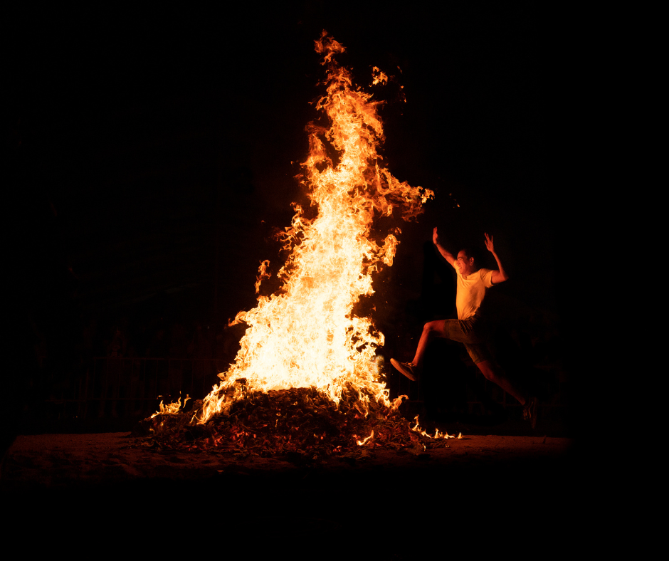
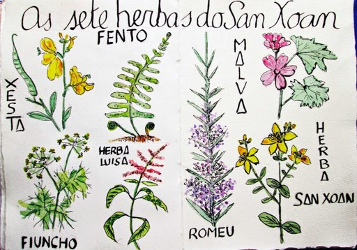
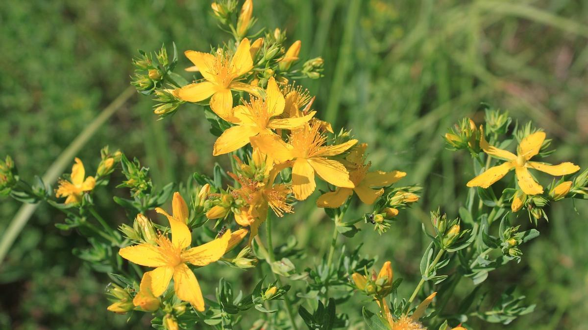
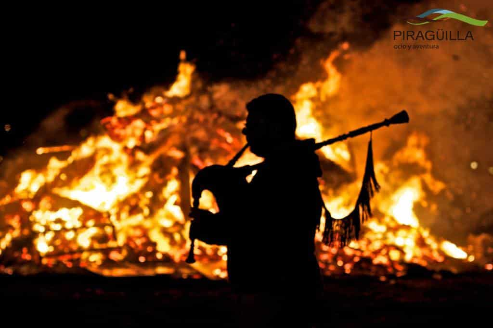

Conceptos
Herbas de San Xoán




Ficha rápida do concepto
- Nome: Herbas de San Xoán
- Tipo: Tradición popular galega
- Para que serven? Segundo a tradición, para atraer protección, saúde e boa sorte.
- Como se preparan? Déixanse varias herbas en auga durante a noite do 23 de xuño e empréganse á mañá seguinte para lavar a cara.
O concepto en si
Unha das noites máis máxicas en Galicia é a de San Xoán. De pequena quedábame mirando como miña nai preparaba un caldeiro con auga e herbas para deixalo toda a noite ao orballo. Eu nunca entendía moi ben por que había que esperar ata a mañá seguinte para lavar a cara con aquela auga, pero ela dicía que era así como tiña que facerse.
Pola noite iamos sempre á casa da miña avoa. Xuntabámonos toda a familia arredor da cacharela e, cando xa quedaban menos lapas, tocaba saltala. Nunca souben se realmente servía para afastar o malo ou simplemente era unha boa escusa para pasar tempo xuntos. Supoño que, ao final, daba un pouco igual.
Agora que vivo na Coruña descubrín que o San Xoán aquí é outra cousa. Milleiros de persoas reúnense nas praias de Riazor e Orzán, as fogueiras énchense de xente, hai sardiñas, queimada, música... Entendo perfectamente por que está considerada unha das festas máis espectaculares de Galicia. Se nunca a vivistes, creo que hai que facelo polo menos unha vez na vida.
Pero, se me dades a escoller, sigo preferindo pasar esa noite nunha praia máis pequena, como Teis, en Vigo. Hai menos xente, todo vai un pouco máis amodo e, dalgún xeito, recórdame máis aos San Xoáns da miña infancia.
Mentres buscaba información tamén descubrín que non existe unha única receita para preparar as herbas de San Xoán. Hai familias que recollen sete plantas, outras nove, e incluso hai quen engade as que ten máis preto da casa. O importante non é tanto o número, senón o ritual: deixar as herbas en auga durante a noite do 23 de xuño para que collan o orballo e lavar a cara con esa auga ao día seguinte como símbolo de protección, purificación e boa sorte.
Entre as plantas que máis se repiten están o hipérico, o fiúncho, o fento, a herba luísa, a malva, o romeu e a xesta, aínda que cada familia ten a súa propia versión. Iso tamén me gusta desta tradición. Non hai unha única maneira de facela; cada casa acaba converténdoa un pouco na súa.
Creo que esa é a parte máis bonita do San Xoán. Máis alá do lume, das meigas ou dos rituais, é unha noite que fala da familia, da memoria e das cousas que seguimos facendo porque alguén nolas ensinou.
Este ano, como todos, prepararei o meu caldeiro con herbas. E á mañá seguinte lavarei a cara con esa auga. Non sei se traerá sorte... pero fai que me acorde de miña nai. E iso xa me parece un bo motivo.
Bibliografía
Floristas, A. (2026, 16 junio). Hierbas de San Juan: cuáles son y dónde encontrarlas. Tendencias floristas - Floristería online.
https://tendenciasfloristas.es/blog/momentos-especiales/eventos-locales/hierbas-san-juan/
Cordobés, R. (2022, 16 junio). San Juan en Galicia: cómo se celebra y dónde disfrutar de la fiesta. Ven A Galicia.
https://venagalicia.gal/noticia/2022/06/16/san-juan-galicia-celebra-donde-disfrutar-fiesta/00031655383082901155723.htm